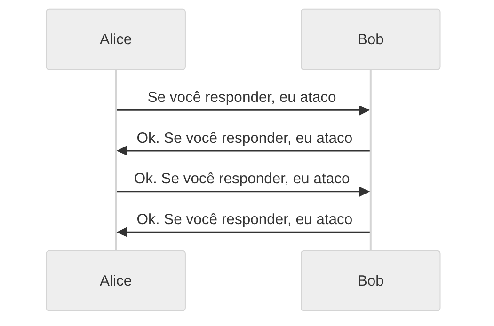

A área de design de protocolos (protocol design) é possívelmente onde métodos formais que usam model checking, como Quint e TLA+, mais tem valor.
Já vimos alguns exemplos de protocolos:
Uma suposição é algo que é aceito como verdadeiro, sem provas.
Suposições são extremamente importantes para protocolos, e é necessário fazê-las explícitas.
Entregar a prova de cabeça pra baixo e pedir que todos desvirem no mesmo momento é uma forma de garantir que todos tem o mesmo tempo de prova
Na decolagem/pouso de um avião, precisamos abrir as janelas e levantar as mesinhas
Sistemas de trocas em jogos ou, semelhantemente, sistemas de pagamento estilo mercado pago
Com imagens de (BROWN, 2022)
Figure 1: Fonte (BROWN, 2022)
Como podemos definir um protocolo de troca de mensagens que garanta que ambos ataquem juntos?
Figure 2: Fonte (BROWN, 2022)
Figure 3: Fonte (BROWN, 2022)
Figure 4: Fonte (BROWN, 2022)
Figure 5: Fonte (BROWN, 2022)

O problema dos dois generais não tem solução!
Introduzido por Lamport em (LAMPORT; SHOSTAK; PEASE, 1982)
Um sistema de computadores confiável deve ser capaz de lidar com a falha de um ou mais de seus componentes. Um componente com falhas pode ser capaz de enviar informações conflitantes para diferentes partes do sistema.
Recurso em vídeo: (COLOHAN, 2016)
Várias divisões do exército bizantino estão acampadas ao redor de uma cidade inimiga, cada divisão comandade por um general.
Precisamos de um algoritmo que garanta:
Mesmo se os generais leais souberem que há um traidor, não há como determinar qual mensagem vem de um traidor.
Segundo (LAMPORT; SHOSTAK; PEASE, 1982), mesmo que o problema pareça simples, sua dificuldade é indicada pelo fato de que, se os generais puderem apenas enviar mensagens orais, nenhuma solução funciona sem que mais de 2/3 dos generais seja leal.
Se considerarmos mensagens assinadas (i.e. com criptografia) que não podem ser forjadas, o problema se torna mais simples e temos solução para o caso de três generais.
Quando tempos esse tipo de dependência do comportamento em uma suposição, é interessante checar/simular nosso modelo com diferentes parâmetros, que obedecem ou não a suposição.
module TendermintModels { import TendermintTest( Corr = Set("p1", "p2", "p3"), Faulty = Set("p4"), // ... ) as n4_f1 from "./TendermintTest" import TendermintTest( Corr = Set("p1", "p2"), Faulty = Set("p3", "p4"), // ... ) as n4_f2 from "./TendermintTest" import TendermintTest( Corr = Set("p1", "p2", "p3"), Faulty = Set("p4", "p5"), // ... ) as n5_f2 from "./TendermintTest" }
No trabalho 1, podemos garantir que os personagens sempre sobrevivem se houver um único monstro.
Assim, nosso protocolo (estratégia) para o trabalho funciona para batalhas contra um monstro.
De forma mais geral, esses são problemas de consenso.
Não fiz figurinhas pra esse, vamos ver as imagens do vídeo da Heidi Howard pro Computerphile (HOWARD, 2016).